地政学
ファドゥーツはスイスとオーストリアの間にある小国の首都です。城、政府、議会、裁判所、外交窓口が近く、関税、通貨、交通、欧州経済圏を通じて周辺国と結びます。小ささが交渉力にも制約にもなります。国境も近いです
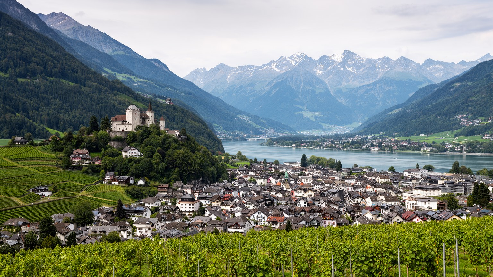
🇱🇮 リヒテンシュタイン / オーバーラント / World City Atlas
ライン川とアルプスの斜面に挟まれた小さな首都です。城、議会、政府、金融、信託、博物館、ブドウ畑、国境通勤、観光が、歩ける距離の中に密に重なります。
都市の骨格
ファドゥーツは大都市ではありません。けれども君主の城、国会、政府、金融機能、文化施設、ワイン畑、国境を越える労働市場が集まり、小国がどのように世界経済へ接続するかを示す都市です。
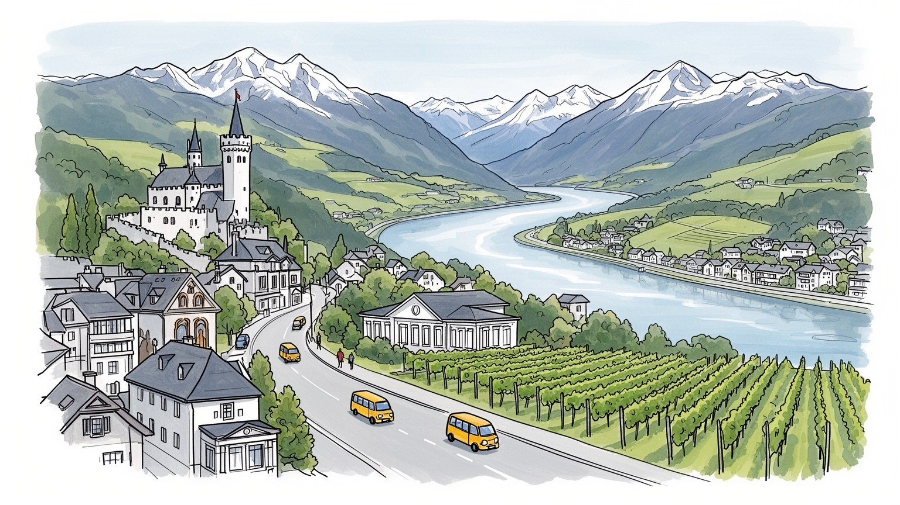
ファドゥーツはスイスとオーストリアの間にある小国の首都です。城、政府、議会、裁判所、外交窓口が近く、関税、通貨、交通、欧州経済圏を通じて周辺国と結びます。小ささが交渉力にも制約にもなります。国境も近いです
金融、信託、行政、観光、文化、教育に加え、国内の精密機械や歯科材料などの高付加価値産業が都市を支えます。多くの労働者はスイスやオーストリアから通い、昼の人口が国境を越えて膨らむ首都です。職住の差も見えます
カトリックの信仰、君主制の儀礼、ドイツ語圏の生活、ライン谷の地域性、現代美術、切手文化が重なります。小さな中心部に国立博物館や美術館が並び、国家の記憶を日常の距離で見せます。礼拝も街に響きます。身近です。
旅行者は城を見上げ、議会前を歩き、美術館、切手博物館、ワイナリー、山道を巡ります。住民には住宅価格、土地の限界、通勤、学校、国境を越える買い物が現実で、観光の静けさと生活の緊張が同居します。山も近いです。
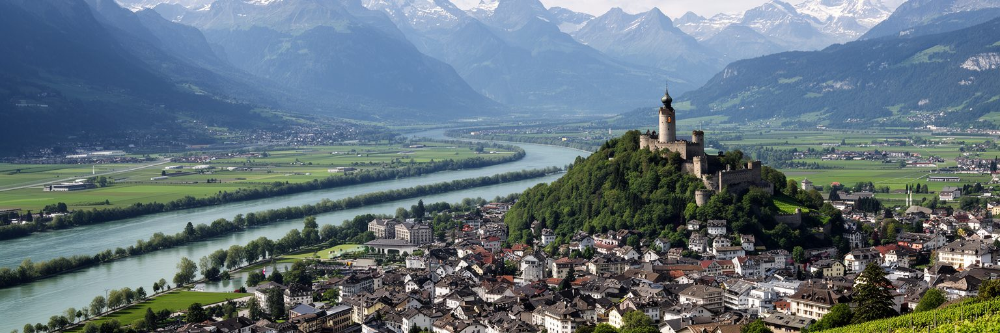
ファドゥーツはライン川の東岸、アルプスの斜面が平地へ落ちる場所にあります。西にはスイスのザンクト・ガレン州、東には山地、北と南にはリヒテンシュタインの町が連なり、首都は広い平野ではなく、谷の限られた余白に置かれています。地図で見ると小さな市街ですが、城、議会、政府庁舎、博物館、金融機関、学校、住宅、ブドウ畑、バス停が短い距離に収まります。ライン川は国境であり、交通路であり、洪水を意識させる自然の境界でもあります。スイス側のブックス駅や高速道路、オーストリア側のフェルトキルヒ方面との接続が、ファドゥーツを国境の内側だけで完結しない都市にしています。山の近さは景観の魅力を作りますが、可住地と建設用地を限り、土地価格や住宅政策を難しくします。市域には谷底だけでなく飛び地や山地の利用も含まれ、都市の実感と統計上の面積にはずれがあります。ファドゥーツを読むには、首都の建物だけでなく、川、斜面、国境、通勤道路を一体として見る必要があります。小さな谷の配置が、国家機能、観光、金融、暮らしの距離を決めています。日常の移動が短く見えても、国境を越える制度と交通が常に背後で働きます。谷底の余白が少ないため、広場や道路や畑の位置まで、国家の土地の使い方が表に出ます。この狭さが、都市の判断を慎重にします。重要です。
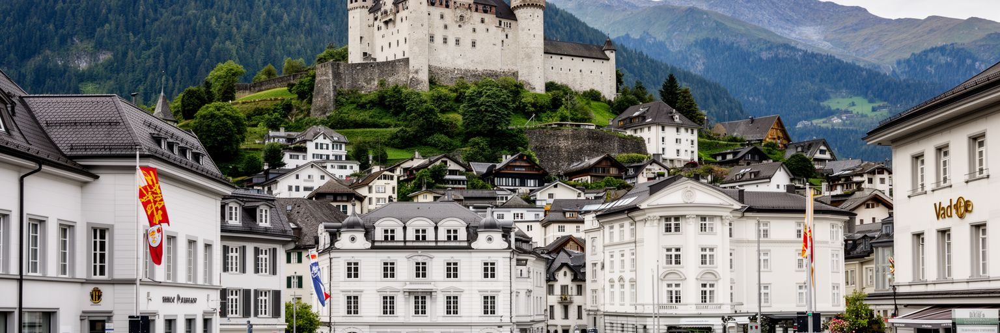
ファドゥーツの政治性は、山上のファドゥーツ城と谷底の議会、政府庁舎が同じ視界に入ることにあります。城はリヒテンシュタイン侯家の居城で、観光客が内部を歩く施設ではありませんが、街の上に常に見え、国家の連続性を象徴します。谷の中心部には国会、政府、裁判所、行政機関が並び、小さな国の制度が歩ける範囲に集まります。リヒテンシュタインは立憲君主制で、直接民主制の要素も強く、国民投票や自治体政治が政治文化を形作ります。首都の規模が小さいため、政治は大都市の匿名的な権力よりも、身近な施設、顔の見える行政、地域社会の合意として現れます。一方で、君主の権限、国民の選択、国際的な金融規制、欧州経済圏との関係は、非常に現代的な論点です。ファドゥーツでは中世的な城のイメージと、透明性や規制を求められる現代国家の実務が同居します。静かな通りに見えても、税制、金融監督、移民、土地利用、教育、外交の判断がここで扱われます。小国の首都では、制度の近さが強みであると同時に、社会の狭さによる緊張も生みます。城を見上げる視線と議会前を歩く足取りが、国家と市民の距離を測ります。国政と自治体政治が近いことで、住民は制度を遠いものとしてではなく、生活圏の中の判断として受け止めます。合意が近いぶん、対立も街に見えやすくなります。
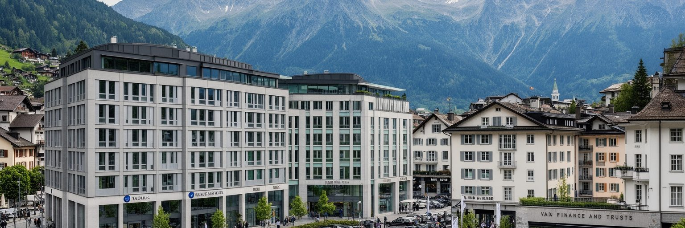
ファドゥーツの経済的な重みは、人口規模からは想像しにくいです。リヒテンシュタインは製造業の比重が高い国ですが、首都には銀行、資産管理、信託、法律、会計、保険、規制当局の機能が集まり、国際的な資本を扱う専門職の都市になっています。スイスフランを用い、スイスとの関税・通貨の結びつきが深く、欧州経済圏にも参加するため、ファドゥーツはEU、スイス、グローバル金融の境界で仕事をします。かつては秘密性や租税回避の印象で語られることも多かったですが、近年は国際基準、情報交換、マネーロンダリング対策、透明性への対応が都市の信頼を左右します。金融は豪華な高層街を作るというより、低層の事務所、弁護士、家族財産管理、専門資格、監督制度として市街に広がります。小さな社会では評判が大きな資産であり、規制の失敗は国家イメージ全体に響きます。金融業は高収入の仕事を生む一方、住宅価格や生活費を押し上げ、地元の若者がどの職業へ進むかにも影響します。ファドゥーツを金融都市として読む時は、数字の大きさだけでなく、信頼を保つ制度、国際圧力への適応、専門職と住民生活の距離を見る必要があります。山に囲まれた静かな通りで、世界の資産と規制が交差しています。目立たない看板の奥にある文書管理と審査の質が、首都の信用を毎日支えています。
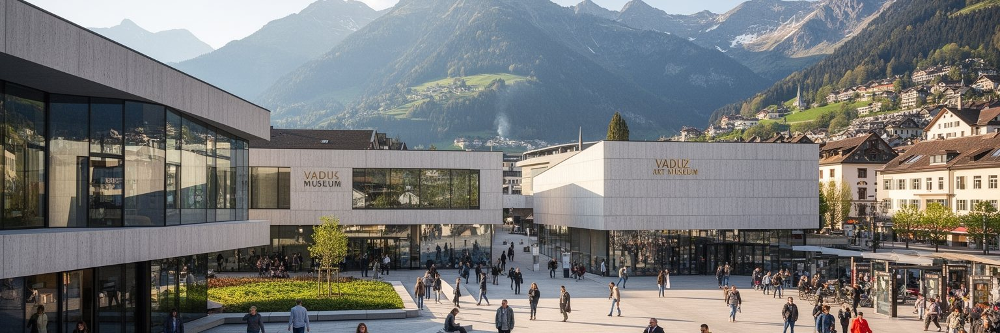
ファドゥーツの中心部を歩くと、国立博物館、リヒテンシュタイン美術館、切手博物館、議会前の広場、公共彫刻が短い距離で連なります。人口数千人の首都にこれほど濃い文化施設があることは、小国が自分の歴史と国際的な見え方を丁寧に編集していることを示します。美術館は現代美術の黒い建築として強い存在感を持ち、侯家コレクションの文脈とも接続します。国立博物館は自然、考古、政治、民俗、産業を扱い、切手博物館は小国外交と収入源、デザイン、収集文化の記憶を伝えます。文化施設は観光客のためだけではありません。学校教育、国家の自己理解、市民の誇り、国際交流の舞台として機能します。小国では文化政策の規模が限られる一方、施設同士の距離が近いため、歩く順番によって国の物語が見えやすくなります。宗教的な伝統、君主制、近代化、金融、アルプスの自然が、展示と街路でつながります。ただし文化の集中は、日常の創作活動や若い表現者の場所をどう広げるかという課題も持ちます。ファドゥーツの文化を読むには、有名な建築だけでなく、地域の学校、音楽、祭り、アマチュア活動、隣国から来る来館者まで見る必要があります。小さな首都の文化施設は、国家の名刺であると同時に、住民が自分たちの位置を確かめる場所です。展示の外にある広場やカフェも、文化を生活へ戻す大切な余白になります。
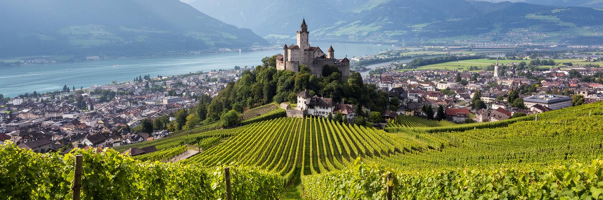
ファドゥーツの景観で印象的なのは、政治と金融の中心でありながら、山麓のブドウ畑が街のすぐ近くに残っていることです。城へ向かう坂道や斜面には葡萄畑が広がり、都市の硬い制度機能に農的な時間を与えます。リヒテンシュタインのワイン生産は大規模ではありませんが、地形、気候、侯家の伝統、地域の食文化を結び、観光客にも住民にも首都の別の顔を見せます。アルプスの谷では日照、風、霜、斜面の向きが栽培に関わり、土地の小ささが品質と景観の両方を意識させます。ワイン畑は美しい背景であるだけでなく、土地利用の競合を示す場所でもあります。住宅、道路、公共施設、観光、自然保全が同じ狭い平地と斜面を求めるため、農地や緑地を残す判断は都市政策そのものになります。ファドゥーツでは数分歩くと業務街から畑へ、畑から城の森へ移ることができ、この近さが首都の魅力を作ります。一方で、気候変動はブドウ栽培に機会とリスクを同時にもたらし、暑さ、降雨、病害、斜面の管理を変えていきます。山麓のワインは観光商品である前に、都市が自分の土地をどう使い、どの風景を未来へ残すかを問う指標です。静かな畑の列が、首都の豊かさを測る尺度になります。収穫期の作業や小さな試飲の場は、金融都市の表情を地域の食卓へ戻します。季節の手入れも景観を支えます。大切です。
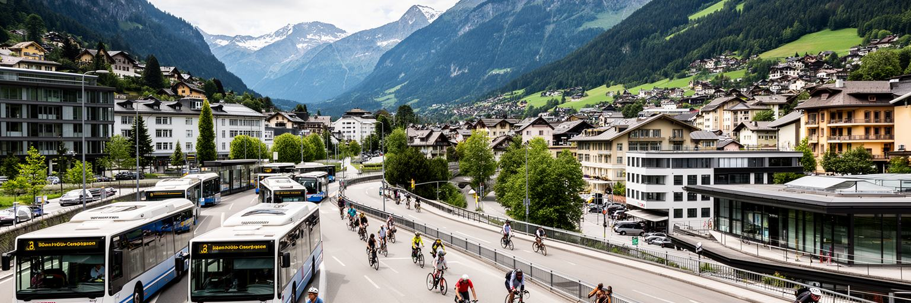
ファドゥーツの日常は、居住人口だけでは説明できません。リヒテンシュタイン全体では就業者の多くがスイス、オーストリア、ドイツなどから通勤しており、首都の事務所、行政、金融、サービス、教育、観光も国境を越える労働力に支えられています。朝にはブックスやフェルトキルヒ方面からバスや車が入り、夕方には谷を出ていきます。鉄道駅は市内中心部ではなく隣接するシャーン側にあり、ファドゥーツへはバスや車の接続が重要になります。国境通勤は小国経済の強みです。広い労働市場から専門職やサービス労働を確保でき、企業は小さな人口を超えて成長できます。一方で、道路混雑、駐車、公共交通、賃金差、社会保険、税、住宅需要、地域の帰属意識といった課題も生みます。昼間に働く人と夜に住む人が一致しない都市では、商店、飲食、学校、地域活動のリズムも独特になります。ファドゥーツの中心部が静かに見える時間帯でも、その背後には毎日国境を越える労働の流れがあります。小国の繁栄は、国境を閉じることではなく、制度を調整しながら開くことで成り立っています。通勤者は外から来る補助的な存在ではなく、首都の日常機能を作る参加者です。橋、バス停、駐車場、時刻表が、国家の経済と地域生活を結ぶ細い回路になっています。昼食時の混雑や夕方の車列にも、国境都市の本当の規模が表れます。
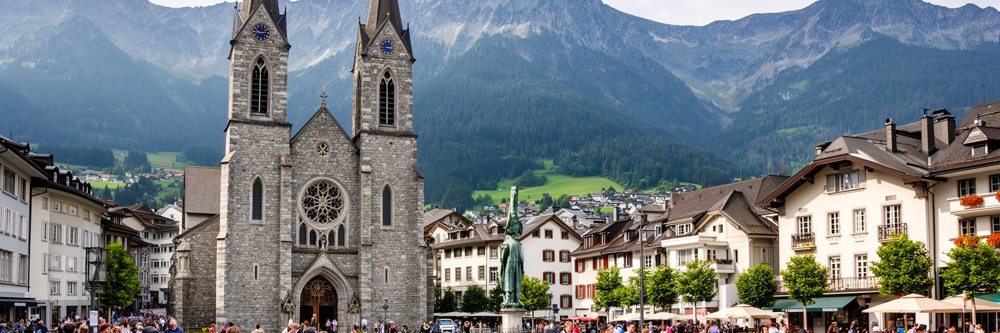
ファドゥーツの市民生活には、カトリックの信仰、自治体の合意形成、家族経営、クラブ活動、学校、地域行事が深く関わります。聖フローリン大聖堂は宗教的な中心であり、国の儀礼や日々の祈りの舞台でもあります。小さな社会では、礼拝、音楽団体、スポーツクラブ、消防、祭り、学校行事が人間関係を密にし、行政と住民の距離も近くなります。信仰は単に伝統的な装飾ではなく、出生、結婚、葬儀、祝日、福祉、倫理観を通じて生活の時間を整えます。一方で、リヒテンシュタインには外国籍の住民や国境を越える労働者も多く、宗教、言語、生活習慣は単一ではありません。カトリックの強い地盤の中で、プロテスタント、イスラム、世俗的な価値観、移住者の経験も都市を構成します。小国の近さは助け合いを生みますが、周囲の目や同調圧力を感じやすい面もあります。ファドゥーツの公共空間は、国家の象徴であると同時に、住民が顔を合わせる生活の場です。教会前の広場、学校、役場、商店、祭りの会場では、政治や経済では測れない帰属感が作られます。都市の穏やかさは、制度だけでなく、こうした日常の関係に支えられています。信仰と市民活動の重なりを見れば、首都が小さくても社会の層は薄くないことが分かります。祝祭の準備や奉仕活動は、国籍や世代を越えて顔を合わせる貴重な機会にもなります。
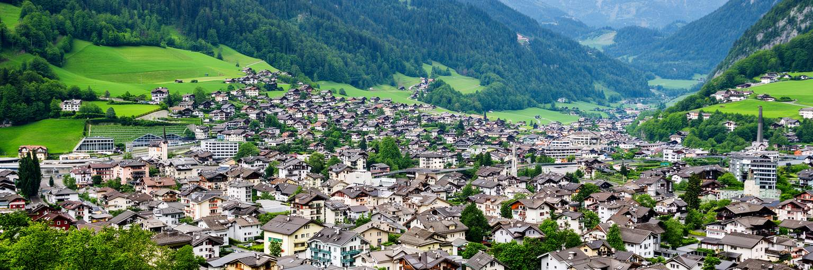
ファドゥーツの暮らしやすさは、静けさ、安全、自然への近さ、公共サービスの質に支えられています。けれども土地の少ない小国の首都では、住宅は大きな課題です。可住地はライン谷の平地と斜面に限られ、農地、自然、景観、道路、公共施設、企業用地、住宅地が競合します。金融や高付加価値産業が生む所得水準は、住宅価格や家賃にも影響し、若い世帯や中所得層がどこに住めるかを左右します。多くの働き手が国外から通勤する背景には、国内の住宅供給の制約もあります。低層で整った街並みは魅力的ですが、密度を上げにくい場合、交通と住宅費の負担を周辺地域へ移すことになります。景観保護と住宅確保は対立しやすいですが、どちらも都市の将来に必要です。斜面に広がる住宅地は山の眺めを得る一方、雪、雨水、道路、災害時のアクセスを考えなければなりません。ファドゥーツの住宅問題は、単に家の数ではなく、誰が首都に住み続け、誰が国境の外から通うのかという社会の形を問います。歩ける中心部、公共交通、学校、緑地、高齢者の住まいをどう組み合わせるかが、日常の質を決めます。美しい景観を保つには、そこに暮らす人の選択肢を狭めない設計が必要です。土地の小ささは制約であり、丁寧な都市計画を促す条件でもあります。庭や畑を残す価値と、集合住宅を増やす必要をどう折り合わせるかが問われます。
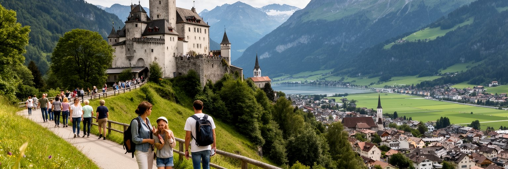
ファドゥーツ観光は、城を見上げることから始まる人が多いです。ファドゥーツ城は侯家の居城で内部公開は限られますが、街のどこからも見え、首都の記憶を強く印象づけます。中心部では議会棟、政府庁舎、美術館、国立博物館、切手博物館、歩行者空間、ワイナリーがまとまり、短い滞在でも国の制度と文化を歩いて理解できます。スイスやオーストリアを周遊する旅行者にとって、ファドゥーツは国境を越えて立ち寄りやすい小さな首都です。観光の魅力は、名所の量よりも、都市と国家の距離が極端に近いことにあります。ただし、観光は住民の生活空間と重なります。写真を撮る場所、静かな住宅地、教会、行政施設、ワイン畑では、来訪者の振る舞いが街の印象を左右します。土産物やパスポートスタンプの軽い楽しさだけでなく、金融、君主制、国境通勤、土地利用、信仰を知ると、旅は深くなります。ファドゥーツは巨大な観光都市ではないため、混雑管理よりも、滞在時間を延ばし、地元の文化施設や飲食、ワイン、ガイドに利益を戻すことが大切です。城へ続く坂道を歩くと、政治の象徴、山の地形、住民の生活、観光の視線が一つに重なります。小さな首都を急いで通過するのではなく、歩く速度で読むことがファドゥーツ観光の価値です。短い旅でも、博物館と丘の道を組み合わせれば、国の厚みが見えてきます。
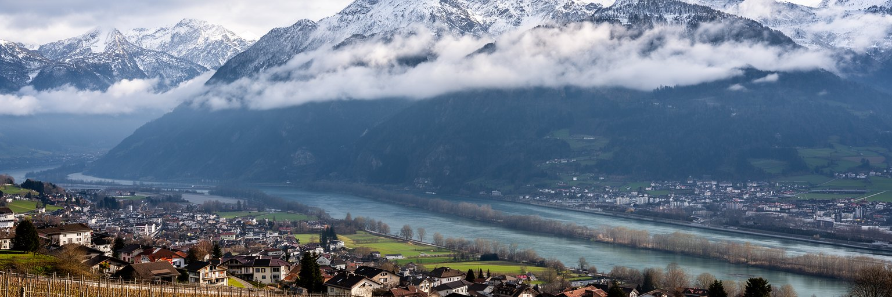
ファドゥーツは海から遠いアルプスの谷にありますが、気候は比較的湿り気を持ち、夏は穏やかで冬には雪や冷え込みがあります。山と川に挟まれた地形は、景観の美しさと同時に、気候リスクを都市へ近づけます。ライン川の治水、斜面の土砂災害、雪、凍結、強雨、フェーン、暑さの変化は、住宅、道路、農地、観光、公共施設に影響します。小さな国では一つの災害が行政能力や交通に与える影響も相対的に大きくなります。気候変動は、冬の雪の量、夏の熱、降雨の強さ、ブドウ栽培、山地の生態系、観光の季節性を変える可能性があります。ファドゥーツの中心部は整って見えますが、都市の安全は川の堤防、排水、斜面管理、森林、道路除雪、警報、隣国との協力に支えられています。水は国境を越えて流れ、山のリスクも行政境界では止まりません。気候適応は大きな工事だけではなく、建物の断熱、日陰、雨水管理、公共交通、歩道の安全、農地の維持として日常に現れます。アルプスの美しい背景を守ることは、観光のためだけでなく、住民が安全に暮らす条件です。ファドゥーツの気候を読む時は、絵葉書のような山並みの奥にある、水、雪、斜面、国境協力の仕組みを見る必要があります。小さな首都ほど、自然との距離は近く、管理の責任も具体的です。学校や高齢者施設まで安全に移動できる道づくりも、気候適応の一部になります。
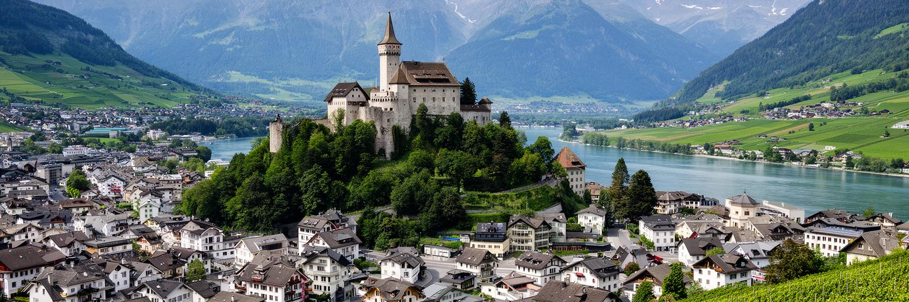
ファドゥーツを読む面白さは、都市の大きさと役割の大きさが一致しないところにあります。人口は数千人ですが、ここには君主の城、国会、政府、裁判所、金融機関、信託事務所、美術館、国立博物館、ワイン畑、国境を越える通勤の流れが集まります。大都市のような高層群や地下鉄網はありません。けれども、リヒテンシュタインがスイス、オーストリア、欧州経済圏、グローバル金融、アルプスの自然の間で自立を保つ仕組みが、歩ける距離の中に見えます。小ささは親密さ、速い意思決定、制度の近さを生みますが、土地不足、住宅価格、国際規制への依存、評判リスク、労働力の外部依存も伴います。城を見上げ、議会前を歩き、金融事務所の低層街を通り、美術館に入り、ブドウ畑からライン谷を眺めると、国家が抽象的な概念ではなく、地形と建物と人の移動でできていることが分かります。ファドゥーツの静けさは、世界から切り離された静けさではありません。むしろ国境を越える資本、通勤、観光、規制、文化交流を受け止めるための整った静けさです。小さな首都だからこそ、経済、政治、信仰、景観、日常生活の関係が近く見えます。その近さが、ファドゥーツをただの可愛らしい首都ではなく、小国の都市性を学ぶ場所にしています。静かな道を数本歩くだけで、国家運営と個人の暮らしが同じ風景に重なります。